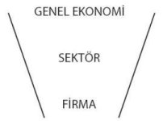
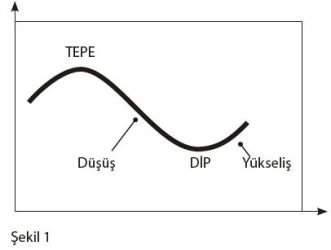
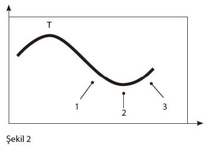

MALİ ANALİZ
Mali tablolar ve onların analizleri çoğumuz için ürkütücüdür. Genellikle, çok karışık gelir ve içinden çıkılamaz gibi görünürler. Oysa, özetlendiğinde onlar da eni sonu bir tahlilden ibarettir. Böyle bakıldığında, savaşmaya hazır olmak ve "Ne kadar zor olabilir ki?" demek, yetiyor bize ilk aşamada. Korkacak çok şey yok, biraz mali tablo ve üzerine biraz da analiz... İşte şimdiden servise hazır.
Mali Analizin Tanımı
Mali Analiz, bir işletmenin mali durumunun, faaliyet sonuçlarının ve mali yönden gelişmesinin yeterli olup olmadığını saptamak ve o işletme ile ilgili geleceğe ait tahminlerde bulunabilmek amacıyla mali tablolarda yer alan kalemler arasındaki ilişkilerin kurulması, göstermiş olduğu eğilimlerin saptanması ve diğer işletmelerin benzer sonuçları ile karşılaştırılmasıdır.
Temel olarak tanımını yapmış olduğumuz mali analiz, işletmeye özel olarak ve ağırlıklı olarak da işletmenin mali tablolarının incelenmesi suretiyle yapılan bir çalışmadır. Sermaye piyasası çalışanları açısından bakıldığında ise incelemenin işletmeden daha yukarlarda bir yerlerde yapılması gereği açıktır. Buna göre, mali analizin başlangıç noktasının "Genel Ekonomi Analizi" olduğu açıktır.
O hâlde mali analiz, işletmenin mali tablolarının gözden geçirilmesi ile başlanması gereken bir süreç olmamakla birlikte, nihai kararını bu noktada vermesi beklenen bir analizdir.
Bu açıklamadan sonra, mali analize salt mali tablo analizi olarak bakmamak gerektiğini hatırda tutarak, ilk olarak söz konusu mali tablolar analizi öncesindeki süreci inceleyelim. Devamında ise, çalışmanın ağırlığını mali tablo analizi çerçevesine oturtacağız.
Mali Analiz: Yukarıdan Aşağıya Yaklaşımı
Çalışmamız boyunca inceleyeceğimiz yukarıdan aşağıya yaklaşımı, bir huni sistemi şeklinde düşünülebilir. Bir şirketin analizinden önce genel ekonomik yapı incelenmeli ve buna göre ekonomik konjonktür hakkında bir yoruma varılmalıdır. Bu yorum, genel yapının analizi ve tahminleri konusunda verdiği bilgi neticesinde, genelde mali piyasalar, özeldeyse sermaye piyasaları hakkında bizi aydınlatacaktır.

Genel ekonomik yapının devamında endüstri (sektör) analizi yapılmaktadır. Endüstri analizi, genel ekonominin ve piyasaların vermiş olduğu sinyalleri takiben ilgilendiğimiz firmanın dâhil olduğu endüstrinin (sektörün) durumunu ve genel durumdan ne şekilde etkilenebileceğini belirlemeye çalışır. Bu noktada genelden özele doğru bir kayış ve iyi ya da kötü durumdaki genel piyasanın ilgilendiğimiz sektörü ne yönde ve ne derece etkileyeceğini tespit etme çabası başlamıştır.
İkinci aşama olan sektör analizinden sonra, genel konjonktür ve ilgili sektör hakkında gerekli bilgi ve beklentilere sahip olan araştırmacı için son aşama, ilgilendiği firmanın analizi olmaktadır. Bu son aşamada analist, genel ekonomi ve ilgili sektörün söz konusu firmayı nasıl etkileyeceği konularındaki inceleme sonuçlarını göz önüne alarak firmaya özel bir çalışma başlatır. Bu çalışmada firmanın mali tabloları esastır, bu tablolar ve bunlardan üretilen rasyolar yardımıyla firmanın finansal analizi yapılır ve genel anlamda temel analiz tamamlanır.
Bu çalışmanın tüm aşamalarında kantitatif analizin yanı sıra kalitatif analiz tekniklerinin de kullanıldığı unutulmamalıdır. Dolayısıyla çalışmalar, bir noktaya kadar kişisel ve subjektif yorumları da içermektedir. Yaklaşım olarak yukarıdan aşağıya sisteminin seçilmesi, genel ekonomi ve devamında sektör durumunun şirketi etkilediği varsayımını temel almaktadır. Zira piyasa her şeyin üzerindedir.
Öte yandan, sektörü ve hatta ekonomiyi etkileyebilecek ölçüdeki bir firmanın ele alınması durumunda aşağıdan yukarıya yaklaşımı dikkate alınabilirdi. Buna örnek olarak, dünyaca ünlü Microsoft firmasını ele alabiliriz. Bu firmanın yeni bir yazılımı ya da bir sistem üretimi sektörü ve devamını, ülke ekonomisini, para akışını etkileyebiliyor. Bu durumda konvansiyonel yukarıdan aşağıya yaklaşımı yerine, söz konusu mega firma için aşağıdan yukarıya yaklaşımını düşünmek mümkün olabilirdi; zira, mükemmel ticari başarı yakalayan bir ürünüyle Microsoft, sektörden etkilenmek bir yana, sektörü etkileyecek güçtedir. Biz yine de bu uç örneği bir kenara bırakarak klasik yukarıdan aşağıya yaklaşımının aşamalarını detaylarıyla incleyelim.
Genel Ekonomi
Yukarıdan aşağıya yaklaşımı çerçevesinde ilk incelediğimiz kalem genel ekonomidir. Burada varsayım, tüm ekonomik ve siyasi alt sistemlerin genel ekonomiden etkileneceğidir. Zira, dünya ekonomisi ülke ekonomilerini, ülke ekonomileri alt sektörleri ve alt sektörler de firmaları etkileyecektir. O hâlde, ekonomiye yönelik genel saptamalarımız ve tahminlerimiz bir noktada firmamızın genel anlamda etkilenme düzeyini belirleyecektir.
Genel anlamda ekonomiyi tanımak, bir anlamda ekonomik dönemleri ve söz konusu dönemlerin neresinde olduğumuzu anlamamızı sağlayacaktır. Bu ise, durgun bir döneme girişimizi, canlılığın başlangıcını ya da resesyonun sürmekte olduğunu bize iletebilen, devamında bu beklentilere göre pozisyonumuzu belirlememize olanak tanıyan bir bilgi olacaktır.

Şekil 1’de, basit olarak iş dönemleri (business cycles) gösterilmiştir. Bu gösterimden de anlaşılacağı üzere, iş dönemleri ekonomideki genel duruma parelel olarak iyi ya da kötü (genişleyen ya da daralan) periyotlara sahiptirler. Bu dönemler finansal mantığa uygun olarak birbirlerini takip ederler, yani finansal açıdan genişlemeyi bir resesyon ya da daralma takip edecektir. Benzer biçimde, böyle bir resesyonu piyasaların ve iş hacminin genişlemesi izleyecektir. Bu tip dönüşler, bir bakıma daralmanın devamında iş potansiyelinin patlaması ya da aşırı gelişmiş bir piyasada artan rekabet neticesinde firmaların sınırlarını çizme ya da küçülme yoluna gitmesiyle bir duraklama ya da gerileme dönemi olarak algılanabilmektedir.
Sonuçta iş dünyası, genel ekonomi ve onun dönemselliklerinden çok etkilenmektedir. Bu etkilenme şirketin tüm mali durumunu derinden etkileyebileceği gibi, şirketin varlığını sürdürebilmesi için en hayati olguları dahi yakından ilgilendirebilecektir. Dolayısıyla, bu periyotları anlamak ve tahmin etmek geleceğe yönelik pozisyon almak (nakit, menkul, lisans, kanuni yükümlülükler, yeni proje ve yatırımlar, insan kaynakları yönetimi, kredi, v.s.) ve global beklentilerde bulunabilmek açısından hayatidir.
Yukarıda da belirtildiği gibi, söz konusu periyotları anlamak, yanlızca pozisyonumuzu ayarlamak ve devamında statümüzü mümkün olan en az zarara uğrayarak korumaktan ibaret değildir. Bu tür dönemler şirketler için fırsatlar ve yıkımlar dönemleridir. Yıkımlardan korunmak için tahminlerde bulunur, pozisyonumuzu ayarlar, dönemi geçiririz. Buna karşın fırsatlar bizi beklemektedir, dönüş dönemlerinin avantajları, fırsatlara olanak tanımalarıdır (kullanabilenlere!). Büyük iş adamları ve meşhur liderler dönüş dönemlerini iyi sezen ve değerlendiren kişilerdir. Bunun finansçası "chrisis means money" (kriz para demektir) deyişinde özetlenmiştir. Bazı gözüpek spekülatörler, Amerikan Borsası’nın kara günlerinin ardından, basıldığı kâğıdın fiziki değerinin altına inen hisse senetlerini alıma geçerek piyasanın normale dönmesiyle normal şartlarda hayal dahi edemeyecekleri meblağların sahibi olmuşlardır. Bu durum bir tür kriz değerlendirmesidir.
Krizden faydalanma, dönemselliğin okunmasıyla mümkün olabilir. Bahsi geçen spekülatörler piyasadaki krizi fark edip nakit pozisyona geçmişler, kriz esnasında kriz sonunu tahmin ederek yatırım yapmışlardır. Düşük fiyatla aldıkları senetleri, piyasanın yükselişini tamamladığını hesapladıkları yerde yüksek fiyatlarla satarak kâr etmişlerdir. Görüldüğü gibi ortada bir kumar yoktur; aksine, sistematik bir çalışma vardır. Hesaplar, tahminler, kararlar ve aksiyon! Piyasalarda başarının sırrı, piyasanın neresinde olduğunuzu bilmekten geçer. Devamında, piyasanın neresinde olduğunuzun hesabı, nereye ulaşabileceğinize giden yol olacaktır.

Şekil 2’de hayalî piyasa T tepesine dek genişleyen, yükselen canlı bir piyasa olmuştur. Bu noktaya dek işler yolunda gitmiş, yeni atılımlar, genişleyen pazarlar, yatırımlar ve kârlar söz konusu olmuştur. Fakat T tepesinin devamında piyasa yön değiştirmiş ve düşmeye başlamıştır. Bu, işlerin daralacağı, satışların düşeceği, kârların ve yeni yatırımların olumsuz etkileneceği bir dönem olacaktır. Bu düşüş ve yükseliş evrelerinin neresinde olduğumuzu algılayabilmek önemli ve bir o kadar da zor bir tespittir.
Genellikle "Mega-Trend"ler geçtikten sonra farkına varılırlar, tıpkı çağlar gibi. Yeni Çağ’ın bittiği Yakın Çağ’ın başladığı kararına her iki çağ da sona erdikten yıllar sonra karar verilmiştir. Dolayısıyla, bizim ilgilendiğimiz ve "Mega-Trend"ler göz önüne alındığında mikro bir çalışma olabilecek ekonomik trendler ve dönemler de tespiti kolay olmayan dalgalardır. Tespitin zor olduğu gerçeği kadar, düşen bir piyasanın bittiği yükselişin ne kadar başında anlaşılırsa bunu kullanmadaki verimin de o denli yüksek olacağı gerçeği de göz önünde bulundurulmalıdır. Bu tespit, firmamızı ilgilendiren yeni yatırım, yeni ürün tasarımı, işçi çıkarma, nakit yönetimi tarzı hayati karar ve uygulamaları etkileyecektir. Piyasanın yönünü ne kadar erken fark edersek kararlarımızı uygulamaya o kadar erken başlayabiliriz. Bu da herkesten daha önce yatırım yapmak, daha önce üretim yapmak, daha önce piyasaya çıkmak ve piyasada lider olmak anlamına gelmektedir.
Peki piyasanın trendinin (yükseliş ya da düşüş) bittiğini ve bir diğerinin başladığını nasıl anlayacağız? Şekil 2’ye baktığımızda bu dönüşün 3 ayrı noktada anlaşılabileceğini görürüz. T tepesinden düşüşte 1 noktası dönüşten önceki noktadır ve burada bize sinyal veren birtakım göstergeler vardır. Bu göstergelere biz ön göstergeler diyoruz. Ne olabilir bu ön göstergeler?
• Yeni iş yeri ruhsatları
• İşten çıkarma oranları
• Tüketim mallarına olan talep
• Yatırım mal ve ekipmanına olan talep
• Duyarlı fiyatlarda değişim
• Satıcıların performansı
• Borsa endeksi
Yukarıda örnekleme yaparak sunduğumuz ve sayıca artırmamız mümkün olan bu göstergelerin ortak özelliği, tümünün 1 noktasında bulunmasıdır. Yani, tüm bu göstergeler, hâlen sürmekte olan ve içinde yaşanan trend kesin bir dönüşe başlamadan önce ortaya çıkar. Sözgeli-mi, işten çıkarma oranındaki artma eğilimi işlerin yolunda giderkenki bir dönemin sonlarına doğru bize piyasada daralma olabileceği sinyali verecektir ya da yeni iş yerleri açılmasındaki artan ivme daralan piyasanın sona ererek hacimli bir piyasanın yaşanacağının habercisi olabilir.
Buna karşın, salt ön göstergelere bakarak hayati kararlar almak zor ve riskli olabilir. Bu durumda yatırımcılar, biraz daha beklemeyi ve dönüşü hissettikten sonra harekete geçmeyi isteyebilirler. Bu davranış, aksiyon için zaman kaybettirecek, ancak dönüş tahmini konusunda daha somut bulgulara sahip olmamızı sağlayacaktır. Bize söz konusu bulguları verebilecek göstergeler ise 2 noktasında yer alan destekleyici göstergelerdir. Destekleyici göstergeler de çok çeşitlidir. Ortak noktaları, tam dönüş esnasında sinyal vermeleridir. Yatırımcı dönüşü yaşarken söz konusu göstergeler aracılığıyla dönüşün yaşandığına dair teyit alır. Destekleyici göstergelere örnek vermek gerekirse:
• Tarım dışı sektör istihdamı
• Sanayi üretim endeksi
• Sanayi ve ticaretteki satışlar
Yukarıda da belirtildiği üzere, çeşitlendirilmesi mümkün olan bu göstergeler yatırımcıya ön göstergelerde uyarılan muhtemel dönüşün başladığını hatırlatmaktadır. Örneğin tarım dışı sektör istihdamındaki artış, dönüş yaşandığının ve tarımsal üretimden mal ve hizmet üretimine insan kaynağının kaydığı sinyalini vererek, bir bakıma, ekonomideki canlılığın habercisi olmaktadır.
Ön göstergeler ve destekleyici göstergelerden sonra dönüşün tamamlanmasıyla kesin sinyali veren ve şekil 2’de, 3 noktasında bulunan gecikmeli göstergeler devreye girer. Bu göstergeler adından da anlaşılacağı gibi, dönüşün tamamlanmasıyla, biraz da gecikmeyle yatırımcılara teyit verirler. Bu gecikmeye karşın, diğer iki gösterge grubuna oranla çok daha net ve kesin sinyaller oluşturmaktadır. Bu göstergelere örnek vermek gerekirse:
• Sanayi ve ticaretteki stoklar
• Ticaret ve sanayi borçlarındaki değişimler
• Tüketici borç/gelir oranı
• Banka faiz oranları
Bu göstergeler de diğer iki grup gibi geliştirilmeye açıktır. Ancak ortak noktaları piyasadaki bir trendin bitip diğerinin başladığının net sinyalini veriyor olmalarıdır. Örneğin, destekleyici göstergelerde, sanayi ve ticaretteki satışları gözlemleyerek piyasayı incelerken, gecikmeli göstergelerde, satışların net sonucu olan stokları inceliyoruz. Bir noktada net sonuçlarla ilgileniyoruz.
Yukarıda çeşitli göstergeler aracılığıyla incelediğimiz genel ekonomi ve/veya piyasa, bize gelecek hakkında genel bilgi vermekte ve yatırım kararlarımızı en üst düzeyde etkilemektedir. Piyasa hakkında genel bir fikrimiz olduktan sonra, temel analiz çalışmamızın ikinci aşaması olan firma analizi ya da sektör analizi devreye girmektedir.
Endüstri (Sektör) Analizi
Temel analiz çalışmasında ilk aşama olarak incelediğimiz ekonomi analizinde genel ekonominin yönü konusunda bilgi edinmeye çalışıyor ve detay çalışmaları öncesinde piyasayı ve muhtemel davranışını ölçüyoruz. Bu ölçüm bize "genel gidişat iyi" sinyali verse dahi, ikinci aşamada ilgilendiğimiz sektörü incelemek gerekiyor. Zira, genel piyasa durumunun her sektörü aynı biçimde etkilemesi mümkün değildir.
Örneğin, devalüasyon beklentisi olan Güney Afrika’da tüm sanayi şirketlerinin bundan olumsuz etkilenmesi beklenerek bu gruba bağlı firmaların hisse senetleri elden çıkarılırken, Gold Fields of S.Africa altın firmasına ait senetlerin değer kazanması şeklindeki olaylar muhtemeldir. Dolayısıyla, endüstri analizi en az genel ekonomi analizi kadar hayatidir; zira, tüm firmaların genel ekonomiyle olan ilişkileri aynı değildir. Bazıları oldukça paralel hareket ederken bir kısmı daha yavaş, bir kısmı daha hızlı, bir kısmıysa verilen örnekteki gibi ters yönde hareket edecektir. Bu durum, finansal varlıkları değerleme modeli (CAPM) içinde detaylı olarak tanımlanmıştır. Pratik olarak bir menkul kıymetin pazara göre hareketini ölçmeyi amaçlayan bir parametre olan "beta" bu durumu açıklamaktadır. Ancak söz konusu parametre ve içeriği, çalışmamızın sınırlarını aştığı için detaylarından bahsetmeyeceğiz.
Endüstri analizinde genel piyasa ilişiğini incelendikten sonra (bu çalışmayı burada incelemeyeceğiz) piyasadaki muhtemel dönemsellikler incelenir (cycles). Bu aşamada hangi dönemlerde sektör canlanır, hangi dönemler bilançolara nasıl yansır, hareketler hangi parelel sektörlerden etkilenir ya da onları etkiler gibi çalışmalar dönemselliğin anlaşılmasına yardımcı olacaktır.
Analizde bir diğer nokta performanstaki istikrardır. "Sektöre ait grupların performansı istikrar göstermekte mi?" sorusu önem arz etmektedir. Zira aynı şartlar altında aynı davranışı göstermeyen bir yapıyı incelemek ve onunla ilgili ileriye yönelik tahminde bulunmak hiçbir tahmin sistemi için uygun değildir. Tahmin sistemleri, geçmiş dataları inceleyerek ve çeşitli istatistik araçlarından faydalanarak geleceğe yönelik varsayımlarda bulunurlar; dolayısıyla, geçmişte oluşan şartlar aynen mevcut ise yapının aynı davranışı göstermesi, performansını yinelemesini beklerler. Oysa istikrarsız bir yapı, tahmini zor ve istatistik yaklaşımı sürekli stokastik eklemelere maruz bırakan bir ortam yaratacaktır.
Sektör analizindeki önemli bir nokta da, sektörün gerçek bir sektör olup olmadığının net olarak incelenmesidir. Zira, aynı sektöre dâhil ettiğimiz firmalar, aynı şartlar altında, aşağı yukarı aynı davranışı göstermiyorlar ve hatta ters davranma gösteriyorlar ise bizim firmaları gruplandırmamızda bir hata olduğunu düşünmemiz gerekecektir. Bu duruma ülkemizde de rastlanmıştır; bazı dergilerde, özellikle de yeni çıktıkları dönemlerde, yatırım ortaklıkları ile gayrimenkul yatırım ortaklıkları aynı sektör altında toplanmış ve yatırım ortaklıkları denmiştir. Oysa, söz konusu gruplardan ilki, bünyesinde borsada işlem gören firmaların senetlerini bulundurmak suretiyle, bir noktada borsaya parelel hareket etmeye adayken, diğeri gayrimenkullere yatırım yapmış olup (arazi, mülk) borsadan bağımsız hareket edebilecektir.
Yukarıda verilen örneklerin de çoğaltılması mümkündür; ancak konunun açıklandığını düşünerek ve detaya girmemeye özen göstererek temel analiz çalışmasının üçüncü ve son aşaması olan firma analizine geçeceğiz.
MALİ ANALİZİN AMAÇLARI VE YATIRIMCI
Mali tablolar, incelenecek firma hakkında önemli mali bilgi kaynaklarıdır. Bu nedenle, söz konusu mali bilgilerin derlenmesi, analizi ve yorumlanması, diğer bir deyişle mali analiz, sağlıklı yatırım yapabilmenin ön koşullarından birisidir.
Mali analizi yapan tarafa göre mali analizin amacı farklılık gösterecektir. Aşağıda tarafların mali analizi kullanma amaçları belirtilmiştir:
Tablo 1
| ANALİZ YAPAN | ANALİZ AMACI |
| Borç Veren - Banka | Kredinin Güvenli Geri Dönüşü |
| Yatırımcı - Hissedar | Yatırımın Verimi Hisse Başına Kârın Ölçülmesi |
| Yönetim | Faaliyetin Verimliliği Sağlıklı Büyüme Kârlılık Oranı İç Kontrol |
| Hükûmet | Vergi Kontrolü Ekonomik Verimlilik |
Tarafların amaçları dikkate alındığında, yatırımcı ya da yatırımcıyı yönlendiren analistin bakış açısı bizim için ön plana çıkmaktadır.
Yatırımcı ya da analist açısından yatırımın verimi esastır. Buna göre yatırımcı açısından kritik analizler:
• Kârlılık
• Fiyat
• Getiri
olacaktır. Zira yatırımcı, yapmış olduğu yatırım üzerinden elde edeceği getiriyi, yapmış olduğu yatırımın verimliliğini, kârlılığını ve yapmış olduğu yatırımın fiyat performansını (ucuzdan alıp pahalıya satma) dikkate alacaktır. Böyle bakıldığında, yatırımcının, yatırımının performansını ölçerken ya da bir firmaya yeni yatırım yaparken dikkate alacağı parametreler kredi veren bir bankacınınkinden daha farklı olacaktır.
Örneğin, bankacı rasyo analizinde, işletmenin likiditesini inceleyen rasyoları dikkate alırken, yatırımcı, ortak sıfatıyla
• Hisse başına kazanç
• Fiyat-kazanç oranı
• Faaliyet kâr marjı
• Varlıkların kârlılığı
• Öz kaynak kârlılığı
ve benzeri rasyoları dikkate alacaktır, zira yaklaşımı "ortak" yaklaşımıdır.
MALİ ANALİZDE KULLANILAN MALİ TABLOLARIN İNCELENMESİ
Mali analizde kullanılan mali tablolar, temel ve ek mali tablolar olarak ikiye ayrılmaktadırlar.
Çeşitli kaynaklarda farklı eklemeler yapılmış bir işi olmakla beraber, temel mali tablolar bilanço ve gelir tablosu olarak kabul edilmektedir. Ek mali tablolar sayıca daha çok olmakla birlikte, en çok kullanılanları:
• Fon akım tablosu,
• Nakit akım tablosu,
• İşletme sermayesi değişim tablosu,
• Öz kaynaklar değişim tablosu,
• Kâr dağıtım tablosudur.
Mali analiz çalışmalarında söz konusu tablolar, geleceğe yönelik olarak hazırlanabilir. Geleceğe yönelik olarak hazırlanan tablolara proforma tablolar denir.
Şimdi bazı mali tabloları inceleyelim.
Bilanço
Bilanço, bir işletmenin belirli bir tarihte sahip olduğu varlıklar ile bu varlıkların finanse edildiği kaynakları gösteren bir mali tablodur. Bir diğer anlatımla işletmenin "mal beyanı" ve "nereden buldun"udur.
Bilançonun, işletmenin varlıklarını gösteren bölümüne aktifler, kaynaklarını gösteren bölümüne ise pasifler denir. Muhasebenin en önemli ilkelerinden biri bilançonun aktif ve pasif taraflarının eşitliğidir.
AKTİF TOPLAMI = PASİF TOPLAMI
(VARLIKLAR) (KAYNAKLAR)
Söz konusu eşitlik bir kural olmaktan çok, ticaretin doğal bir sonucudur. Buna göre, bir işletme kullandığı kaynakları birtakım varlıklara çevirecek, dolayısıyla sahip olduğu kaynaklara eş miktarda varlıklara sahip olacaktır. Aksi takdirde kendisine ait olmayan bir varlığı elde bulunduruyor ya da kendisine ait olan bir varlığı envanterde göstermiyor demektir.
Bilançonun aktifinde yer alan varlıklar, paraya dönüşme hızlarına göre (likidite), en çok likitten en az likit değere doğru, pasifinde yer alan kaynaklar ise en kısa vadeli kaynaktan en uzun vadeli kaynağa doğru sıralanır.
Aktif (Varlıklar)
Bir işletmenin tüm varlıkları aktiflerinde sıralanır. Bir bakıma işletmenin mal varlığı olarak da tanımlayabileceğimiz aktifler, iğneden ipliğe, işletmenin sahip olduğu tüm varlıkları ifade etmektedir. Bunların içinde işletmede kullanılan kâğıt ve kalem gibi kısa sürede tükenen varlıklar olabileceği gibi, bina ve teçhizat gibi büyük yatırımlar gerektiren varlıklar da mevcuttur.
Bilançonun aktif yapısı, kendi içinde dönen varlıklar ve duran varlıklar olarak ikiye ayrılır. Dönen varlıklar, nakit ya da bir yıl içinde nakde dönüşecek değerleri, duran varlıklar ise paraya çevrilme süresi 1 yılın üzerinde olan varlıkları gösterir. Buna göre açıkça görüleceği üzere, bilançodaki varlıklar, nakde dönüşüm sürelerine bağlı olarak sınıflandırılmaktadırlar.
Bu tanımlamayı biraz daha genişletirsek, duran varlıklar paraya çevrilmesi planlanmayan (makine-teçhizat vb.) ya da en erken 1 yıl sonra nakde dönüşmesi planlanan/beklenen varlıklardır. Öte yandan, işletmenin kasasındaki ya da banka hesaplarındaki kaynakları ve satmak üzere üretmiş olduğu mamüller ise kısa sürede nakde çevrilmeyi beklediklerinden, dönen varlıklar olarak karşımıza çıkmaktadırlar.
Dönen ve duran varlıkların bilançodaki alt bölümleri aşağıda sıralanmıştır.
| A- Dönen Varlıklar | B- Duran Varlıklar |
| 1. Hazır değerler | 1. Ticari alacaklar |
| 2. Menkul kıymetler | 2. Diğer alacaklar |
| 3. Ticari alacaklar | 3. Mali duran varlıklar |
| 4. Diğer alacaklar | 4. Maddi duran varlıklar |
| 5. Stoklar | 5. Maddi olmayan, duran varlıklar |
| 6. Yıllara yaygın inşaat ve onarım maliyetleri | 6. Özel tükenmeye tabi varlıklar |
| 7. Gelecek aylara ait giderler ve gelir tahakkukları | 7. Gelecek yıllara ait giderler ve gelir tahakkukları |
| 8. Diğer dönen varlıklar | 8. Diğer duran varlıklar |
Pasif (Kaynaklar)
Bilançonun pasif kısmında, aktifler altında sıralanan varlıkların nasıl finanse edildiği açıklanmaktadır. Buna göre, işletmenin ihtiyaç duyduğu varlıkları almasının temel yolları, söz konusu varlıkları kendi kaynakları ile ya da yabancı kaynaklar yoluyla finans etmesi olacaktır.
Bir işletme, kaynaklarını iki farklı şekilde sağlayabilir:
• Kendi kaynakları, diğer bir deyişle öz kaynaklar,
• Dışarıdan sağlanan kaynaklar veya yabancı kaynaklar,
Yabancı kaynaklar ise vadelerine göre kısa vadeli ve uzun vadeli olmak üzere iki farklı bölümde incelenir. Pasiflerin bölümleri aşağıda belirtilmiştir.
| A- Kısa Vadeli Yabancı Kaynaklar | B- Uzun Vadeli Yabancı Kaynaklar | C- Öz Kaynaklar |
| 1. Mali borçlar | 1. Mali borçlar | 1. Ödenmiş sermaye |
| 2. Ticari borçlar | 2. Ticari borçlar | 2. Sermaye yedekleri |
| 3. Diğer borçlar | 3. Diğer borçlar | 3. Kâr yedekleri |
| 4. Alınan avanslar | 4. Alınan avanslar | 4. Emisyon primi |
| 5. Yıllara yaygın inşaat ve onarım hakedişleri | 5. Borç ve gider karşılıkları | 4. Geçmiş yıllar kârları |
| 6. Ödenecek vergi ve diğer yükümlülükler | 6. Gelecek yıllara ait gelirler ve gider tahakkukları | 5. Geçmiş yıllar zararları (–) |
| 7. Borç ve gider karşılıkları | 7. Diğer uzun vadeli yabancı kaynaklar | 6. Net dönem kârı (zararı) |
| 8. Gelecek aylara ait gelirler ve gider tahakkukları | ||
| 9. Diğer kısa vadeli yabancı kaynaklar |
Bilanço, işlevi gereği farklı biçimlerde de olsa aynı durumu ifade etmektedir. Ancak genel alışkanlıklar neticesinde iki farklı formatta hazırlanmaktadır. Elbette, söz konusu gösterimler, geçmişten gelen ve genel kabul görmüş yaklaşımlar olarak standartlaşmışlardır.
Hesap tipi bilançolarda aktif sol tarafta, pasif sağ tarafta yer alır. Rapor tipi bilançolarda ise aktif üstte, pasif alttadır.
Gelir Tablosu (Gelir-Gider Tablosu, Kâr-Zarar Cetveli)
Gelir tablosu, işletmenin belli bir dönemde elde ettiği tüm gelirler ile aynı dönemde katlandığı bütün maliyet ve giderleri ve bunların sonucunda işletmenin elde ettiği dönem net kârını veya uğradığı dönem net zararını topluca gösteren bir mali rapordur.
İşletmenin belli bir andaki durumunu belirten tablo olarak tanımladığımız iki bilanço anı arasındaki dönemde işletmenin faaliyet dönemindeki gelir ve giderlerini gösterir tablo olarak da düşünebileceğimiz gelir tablosu, nakit akımlarını takip etmez. Bunun yerine, nakit olarak akış olsun ya da olmasın, gerçekleşmiş olan gelir ve giderleri gösterir.
Gelir tablosu, işletmenin periyodik gelişmeleri ile içinde bulunduğu dönemdeki kazanç gücünü tam ve gerçek olarak yansıttığı gibi, işletmenin bir dönem faaliyeti ile ilgili bilgileri de ortaya koymaktadır.
Tam ve açık bir gelir tablosu aşağıdaki bilgileri içermelidir:
• İşletmenin ve tablonun adı, içerdiği dönem,
• İşletmenin esas faaliyetlerinin oluşturduğu gelir kaynakları, bunların maliyet ve giderleri,
• Dönemin faaliyet kârı veya zararı (esas faaliyetlerden sağlanan),
• Döneme ait diğer olağan gelir ve giderler,
• Dönemin olağan kârı ve zararı,
• Dönemin olağan dışı gelirleri ve giderleri,
• Vergiden önceki dönem kârı (zararı),
• Vergi karşılıkları,
• Dönem net kârı (zararı).
Örnek bir gelir tablosu formatı aşağıdaki gibi olacaktır. Buna göre işletmenin belli bir dönemdeki gelir ve giderleriniaynı formda gösteren gelir tabloları, örnekte de görüleceği üzere, en az iki dönemin birlikte gösterildiği biçimiyle yaygındır. Bu durum da mali tabloların analizinde anlamlıdır.
Fon Kaynakları ve Kullanımları Tablosu
Bilindiği gibi bilanço, belirli bir anda, işletmenin fonlarını hangi kaynaklardan sağlamış olduğunu ve bunları nerelerde kullandığını göstermektedir. Ancak bu statik bir durumdur. Bu nedenle bilançoya bakarak işletmenin mali durumu hakkında tam bir bilgi sahibi olmak imkânsızdır.
İşletmenin durumunun daha iyi anlaşılması amacıyla destek olarak kullanılabilecek bir tablo olan fon kaynakları ve kullanımları tablosu, bir işletmenin mali faaliyetlerini fonların elde edildikleri kaynaklar ve kullanıldıkları yerler bakımından gösteren bir tablodur. Fon akım tablosunun düzenleniş amacı, bir işletmenin finanslama ve yatırım faaliyetlerinin, dönem içi mali durumundaki değişiklikleri kapsayan bilgilerinin mali tablo kullanıcılarına sunulmasıdır.
Tablo 2
| Önceki Dönem | Cari Dönem | |
| A- Brüt Satışlar | ||
| B- Satış İndirimleri (–) | ||
| C- Net Satışlar | ||
| Ç- Satışların Maliyeti (–) | ||
| Brüt Satış Kârı veya Zararı | ||
| D- Faaliyet Giderleri | ||
| Faaliyet Kârı veya Zararı | ||
| E- Diğer Faliyetlerden Olağan Gelir ve Kârlar | ||
| F- Diğer Faliyetlerden Olağan Gider ve Zararlar | ||
| G- Finansman Giderleri | ||
| Olağan Kâr veya Zarar | ||
| H- Olağan Dışı Gelir ve Kârlar | ||
| I- Olağan Dışı Gider ve Zararlar (–) | ||
| Dönem Kârı veya Zararı | ||
| İ- Vergi ve Diğer Yasal Yükümlülükleri | ||
| Dönem Net Kârı veya Zararı |
Aşağıda fon kaynakları ve kullanımları tablosu kalemleri aktarılmıştır:
| A- Fon Kaynakları | B- Fon Kullanımları |
| 1- Faaliyetlerden Sağlanan Kaynaklar (i) | 1- Faaliyetlerde Kullanımlar |
| a) Net Dönem Kârı (Zararı) | a) Net Dönem Zararı |
| b) Amortismanlar (ii) | b) Amortismanlar |
| 2- Dönen Varlıklar Tutarındaki Azalışlar | 2- Ödenen Vergi ve Benzerleri |
| 3- Duran Varlıklar Tutarındaki Azalışlar (iii) | 3- Ödenen Temettüler |
| 4- Kısa Vadeli Yabancı Kaynaklardaki Artışlar | 4- Dönen Varlıkların Tutarındaki Artışlar |
| 5- Uzun Vadeli Yabancı Kaynaklardaki Artışlar | 5- Duran Varlıkların Tutarındaki Artışlar |
| 6- Öz kaynaklar Tutarındaki Artışlar (iv) | 6- Kısa Vadeli Yabancı Kaynaklardaki Azalışlar |
| 7- Uzun Vadeli Yabancı Kaynaklardaki Azalışlar | |
| 8- Öz kaynaklar Tutarındaki Azalışlar |
Net İşletme Sermayesi Değişim Tablosu
Mali durumdaki değişmeleri yansıtmada kullanılan bir diğer önemli tablo da net işletme sermayesi değişim tablosudur. Rasyo analizleri açıklandığında daha detaylı biçimde tanımlanacak olan net işletme sermayesi, işletmenin dönen varlıkları ile kısa vadeli borçları arasındaki farktan oluşmaktadır. Buna göre işletme, yakın gelecekte nakde çevireceği varlıkları ile kısa vadeli yükümlülüklerini karşıladıktan sonra, kalan değeri ifade etmektedir.
Söz konusu tablo, bir faaliyet dönemi içinde net işletme sermayesinde ortaya çıkan artış veya azalışları, net çalışma sermayesinin kaynaklarını ve kullanım yerlerini göstermektedir.
Net işletme sermayesindeki değişim tablosu ile işletmede bir faaliyet dönemi içinde işletme sermayesinde ortaya çıkan değişiklikler analiz edilmekte ve çalışma sermayesini arttıran veya azaltan nedenler belirli bir düzen içinde işletme ilgililerine sunulmaktadır.
Net işletme sermayesi, işletmenin borç ödeme gücünün saptanmasında önemli bir gösterge olduğundan kredi veren kurumlarca her zaman üzerinde durulan bir konu olmaktadır. İşletme yönetimi, normal faaliyetlerini dönen varlıkları ile yürütmeye çalışmaktadır. Bu varlıkların finansmanında ise çeşitli kaynaklardan yararlanılmaktadır. Net işletme sermayesi değişim tablosu bu konuyu analiz etmek amacıyla kullanılan bir mali tablodur.
Net işletme sermayesi değişim tablosunu oluşturan kalemler aşağıda belirtilmiştir.
Net İşletme Sermayesindeki Değişiklikler
1. Net Likit Değerlerdeki Artış (azalış)
a. Hazır Değerlerdeki Artış (azalış)
b. Menkul Kıymetlerdeki Artış (azalış)
2. Diğer Çalışma Sermayesi Hesaplarındaki Artış
(azalış)
a. Ticari Alacaklardaki Artış (azalış)
b. Diğer Alacaklardaki Artış (azalış)
c. Stoklardaki Artış (azalış)
ç. Gelecek Aylara Ait Gider Hesaplarındaki Artış
(azalış)
d. Diğer Dönen Varlıklardaki Artış (azalış)
e. (–) Kısa Vadeli Yabancı Kaynaklardaki Azalış
(artış)
3. Net Çalışma Sermayesindeki Artış (I + II)
MALİ TABLOLARIN ANALİZE HAZIR HÂLE GETİRİLMESİ
Bilançoda Aktarma Arındırma İşlemleri
İşletmelerin mali tabloları, isteyerek ya da istemeyerek mali analizden uzak biçimde sunulmaktadır. İşletmelerden alınan bilanço, çeşitli nedenlerle açık ve doğru olarak düzenlenmemektedir. Bu nedenle yapılan inceleme sonucunda birtakım rakamların bilanço kalemleri arasında aktarılması, eklenmesi veya düşülmesi gerekmektedir.
İşletmeler bazı nedenlerle bilerek veya bilmeyerek mali tablolarını hatalı olarak düzenlemektedir. Mali analize geçilmeden önce yapılması gereken, söz konusu mali tabloların bu hatalardan arındırılmasıdır.
Genel olarak özetlemek gerekirse, yatırım amaçlı yapılan mali analizde incelenen firmayı olduğundan daha güçlü gösteren ve analisti yanlış yönlendiren hatalar aşağıda sıralanmıştır:
• Aktiflerin yüksek gösterilmesi,
• Borçların düşük gösterilmesi,
• Duran varlıkların cari varlıklar olarak gösterilmesi,
• Sermayenin yüksek gösterilmesi,
• Borçların olduğundan uzun vadeli gösterilmesi,
• Satışların yüksek gösterilmesi,
• Kârlılığın yüksek gösterilmesi,
Bu hatalara neden olan ve analistin dikkat etmesi gereken konular bilanço kalemleri üzerinden incelenecektir.
Aktif
a. Kasa ve Bankalar
• Vadeli çeklerin söz konusu hesapta yer alması durumunda, arındırılarak alacaklar kalemine aktarılmalıdır.
• Nakit karşılıklı kredi kullanarak mevduat yaratılıyorsa, borçlar ve kasa hesabından arındırılmalıdır.
• Bankalara teminat olarak aktarılan mevduat blokeleri bağlı değerlere aktarılmalıdır.
• Döviz kasasının uygun olan kuruyla değerlendirilmelidir.
• Muhasebeleştirilemeyen işlemler nedeniyle kasanın olduğundan fazla gözükmesi durumunda bu tutar arındırılmalıdır.
b. Menkul Değerler
Kanuni bir yükümlülüğü yerine getirmek, iştirak veya uzun vadeli yatırım amacıyla alınmış tahviller, bağlı değerler bölümüne aktarılmalıdır.
c. Alacaklar
• Alacakların, ticari faaliyetlerden veya diğer konulardan kaynak-landığının (ortaklardan, çalışanlardan vs.) ayırımı yapılmalıdır.
• Vadesi 1 yıldan uzun olan alacaklar dönen varlıklardan arındırılmalıdır.
• Finansman senetleri (hatır bonoları) alacak senetleri tutarından indirilmelidir.
• Tahsil etme kabiliyeti kalmamış alacakların alacaklardan arındırılması gereklidir.
• Aynı firmaya/şahsa hem alacak hem de borç olması durumunda, söz konusu iki tutar netleştirilmelidir.
ç. Stoklar
• Faturası düzenlenmiş fakat henüz sevk edilmemiş malların,
• Konsinye olarak gönderilmiş firmada bulunan malların,
• Satıcılara verilen avansların,
• Firmanın kullanımı için alınmış kırtasiye, büro malzemesi gibi malların,
• Sürüm kabiliyetini yitirmiş malların stoklardan arındırılması gerekir.
• Değeri veya fiyatı düşen stoklar için karşılık ayrılmalıdır.
• Stokların, firmanın yükümlülükleri için teminat olarak gösterilip gösterilmediği saptanmalıdır.
d. Akreditifler, Satıcılara Verilen Avanslar, Peşin Ödenmiş
Giderler
• Söz konusu yatırım konuları maddi duran varlıkları kapsıyor ise duran varlıklar bölümüne aktarılmalıdır.
e. İştirakler
(İştiraklerin likiditesini analiz amaçlı.)
• Portföydeki hisse senetlerinin kredi teminatı olarak kullanıp kullanılmadığı,
• Bilançoda yer alan iştiraklerin hangi değerle gösterildiği ve bu değerlerde oluşmuş olan potansiyel zarar dikkate alınmalıdır.
f. Diğer Aktifler
• Dönem zararını az veya kârını fazla göstermek için diğer aktiflere aktarılan giderlerin bu kalemden arındırılması gerekmektedir.
• Yıllar itibarıyla birikmiş zararın bağlı değerlerden arındırılması gerekmektedir.
• Tahsil kabiliyetini yitirmiş uzun vadeli alacaklar bilançodan çıkartılmalıdır.
g. Maddi Duran Varlıklar
• Mülkiyeti firmaya ait olmayan maddi varlıklar,
• Kiralanan maddi duran varlıklar,
• İşletme dönemine ait finansman giderleri,
• İşletme dönemine ait kur farkları, maddi duran varlıklar içinden arındırılmalıdır.
h. Maddi Olmayan, Duran Varlıklar
• Her ne kadar yıllar itibarıyla birikmiş zarar Bankalar Birliği’nce hazırlanan bilanço formatında duran varlıklar içinde yer alsâ da bu doğru bir yaklaşım değildir.
Pasif
a. Borçlar
• Firmanın tüm borçlarının bilançoya dâhil edilip edilmediği, borçların doğru tutarlarının belirlenip belirlenmediği analiz edilmelidir.
• Firmanın mali kiralama ile temin ettiği mallar, bilançoda yer almamasına karşılık firmanın yükümlülüğünü arttırdığı için bir analizde borç kalemi olarak dikkate alınmalıdır.
• Uzun veya orta vadeli borçların 1 yıl içinde ödenecek bölümleri kısa vadeli kredi olarak nitelendirilmelidir.
b. Kâr
• Firmanın dönem kârından ödeyeceği vergi tutarı kârdan arındırılıp kısa vadeli diğer borçlara aktarılmalıdır.
• Dönem kârının ortaklara dağıtılacak kısmı borçlar kalemine aktarılmalıdır.
Konsolide Tabloların Oluşturulması
Ülkemizde yaygın bir biçimde kullanılan kompleks işletme yapıları, çeşitli nedenlerle ortaya çıkmıştır. Özellikle hızlı büyüme dönemlerinde yatay ya da dikey entegrasyon ve sektör çeşitlendirme amacıyla ortaya çıkan grup şirketleri ve yatırım holdingleri finansal analiz açısından oldukça karışık durumlar ortaya çıkarmışlardır. Bu durumlarda, işletmelerin gerçek mali yapılarını anlamak daha güç hâle gelmiştir.
İşletmelerin büyüme gereksinimleri sonucunda çeşitli ortaklık yapıları ortaya çıkmaktadır. Kurulan bu ortaklıklar içinde yer alan bir firmanın analizi yapılırken söz konusu firmaya bağlı ortaklıkların, diğer bir deyişle grup firmaları ve iştiraklerin de etkileri göz önüne alınmalıdır.
Firmayı grup firmalarından ve iştiraklerinden bağımsız olarak analiz etmek yanlış yorumlamalara neden olabilir. Bunun nedeni iki önemli faktörle açıklanabilir:
a. Grup firmaları arasındaki borç ve alacak ilişkileri, analiz edilecek firmayı olduğundan daha büyük ve mali yapısını daha olumlu gösterebilir.
b. Firma sermayedarları grup firmalarının yardımıyla mali analizi yapılacak olan firmayı, olumsuz noktaları diğer firmaların üzerine aktararak daha güçlü gösterebilir.
Grup firmaları arasındaki borç-alacak ilişkileri nedeniyle grup firmalarının toplam büyüklüğü, her firmanın büyüklüğünün aritmetik toplamından daha düşük olacaktır. Bu durumda yapılması gereken grup firmalarını beraber analiz etmek, diğer bir deyişle konsolide etmektir. Aksi durumda, olduğundan daha kıymetli olarak değerlendirilecek bir işletme ya da işletmeler bütününe yapılacak yatırım sağlıklı olmayacaktır.
Firmaların mali tablolarının konsolide edilmesi sonucunda grup firmaları tek bir firmaymış gibi düşünülmekte, firmalar arasındaki ticari faaliyetler ve borç-alacak ilişkileri netleştirilmektedir.
Söz konusu netleştirme yoluyla işletmelerin ve toplamda grubun gerçek durumu belirlenebilecektir. Bu yolla gerçek kâr ve kârın toplandığı ana şirket ya da göreceli olarak değersiz ve hatta "boş" şirketler saptanabilecektir.
MALİ ANALİZ YÖNTEMLERİ
Oran Analizi (Rasyo Analizi)
Oran, iki kalem arasındaki ilişkinin basit matematiksel ifadesidir. Mali analizin en çok kullanılan yöntemi olan Oran Analizi hesap veya hesap grupları arasında matematiksel ilişkiler kurularak, işletmenin ekonomik ve mali yapısı ile kârlılık ve faaliyetleri hakkında bir yargıya ulaşılmaya çalışılmaktadır.
Oldukça pratik olması nedeniyle sıkça kullanılan ve piyasada da popüler olan oran (rasyo) analizi, işletmenin kendi içinde ve dönemler arasındaki gelişimi üzerine kurulabileceği gibi, aynı sektördeki benzer işletmelerin rasyolarıyla kıyaslanması biçiminde de kullanılabilir.
Bir firmanın analizi kapsamında yapılan mali analizde, mali tablolarda yer alan rakamlardan çok çeşitli kalemler arasındaki ilişkilerin incelenmesi firmanın likidite durumunu, mali yapısını, kârlılığını ve faaliyetlerdeki durumunu daha iyi ortaya koyabilmektedir.
Söz konusu analiz yönteminde, oranların hesaplanması tek başına bir amaç değildir. Önemli olan, bir mali araç niteliğinde olan oranların işletmenin amaçları ile bütünleştirilerek değerlendirilmesi ve yorumlanmasıdır. Oran analizinden beklenen yararın sağlanması ancak hesaplanan oranların iyi yorumlanması ve nedenlerinin araştırılması ile olanaklıdır.
Oranların yorumlanmasında bazı kıstaslardan yararlanılması zorunludur. Bu kıstaslar, işletmenin geçmiş dönemlerindeki oranlar olabileceği gibi, firmanın faaliyet gösterdiği sektör için geliştirilen oranlar da olabilmektedir. Ayrıca, elde edilebilmesi durumunda, işletmenin proforma mali tabloları (örneğin önceden açıklanmış bütçeler) ile mevcut durumun kıyaslanması da anlamlı olacaktır.
Oranları, işletmenin değişik açılardan değerlendirilmesindeki kullanılış biçimlerine göre, dört ana grupta toplayabiliriz. Üstelik böylesi bir gruplandırma analizi de kolaylaştıracak ve boş yere aynı anlama gelen ya da aynı durumu ölçmeye yarayan rasyoları inceleyerek zaman kaynağını israf etmemizi de önlemiş olacaktır. Söz konusu gruplar aşağıdaki gibidir:
• Likidite oranları
• Mali yapı oranları
• Faaliyet oranları
• Kârlılık oranları
Şimdi de yukarıda verilen rasyo gruplarını kendi aralarında inceleyelim.
Likidite Durumunun Analizinde Kullanılan Oranlar (Likidite Oranları)
Likidite oranları, firmanın kısa süreli borçlarını ve ödeme gücünü ölçmek, işletme sermayesinin yeterli olup olmadığını saptayabilmek için kullanılmaktadır.
Bir firmanın kısa süreli yükümlülüklerini yerine getirmede kullanabileceği değerler, firmanın dönen varlıklarıdır. Likidite oranları, firmanın dönen varlıklarının kısa vadeli yükümlülüklerini karşılama kapasitesini ölçmektedir.
Cari Oran
Cari Oran = Dönen Varlıklar / Kısa Vadeli Boçlar
Cari oranın hesaplanmasında amaç, yukarıda belirtildiği gibi, firmanın kısa süreli borçlarını ödeme gücünü ölçmektir. Söz konusu oranın yorumlanmasında yabancı birtakım kaynaklar, cari oranın 2 civarında olmasının uygun olacağı yönünde görüş bildirmektedirler. Bunun nedeni kısa vadeli borçların ödenebilmesi için gerekli olan dönen varlıkların tümünün nakit olmadığı, dolayısıyla yarısının dahi likit olmaması durumunda bile yükümlülüklerin yerine getirilebileceğinin garanti altına alınması çabasıdır. Bu anlamda, söz konusu rasyonun en az 2 olmasını olumlu olarak değerlendiren yabancı çalışmalara rağmen, ülkemizde özellikle de üretici işletmeler için bu değerin 1.8’ler seviyesinde olması dahi yeterli olarak görülmektedir.
Bir firmanın likiditesinin yüksek olması, kısa vadede borçlarını kapatabilme kapasitesinin yüksek olmasını ifade etmesi nedeniyle, firmanın kredibilitesini arttıran bir faktördür. Aynı nedenle cari oranın düşmesi firmanın kredibilitesi açısından olumsuz bir gelişmedir.
Söz konusu oranların aşırı yüksek olması da, bu kez, firmanın aşırı likit olduğu ve belki de daha yoğun miktarda yatırım yapabilecekken, örneğin finansal enstrümanlara yönelmek suretiyle, esas faaliyetlerinden uzaklaştığı anlamına gelebilecektir. Böylesi bir durum, firmanın içinde bulunduğu sektör de dikkate alınarak, olumsuz olarak da düşünülebilir.
Böylesi yorumları yapabilmek için işletmeyi ve işletmenin içinde bulunduğu sektörü tanımanın yanı sıra, söz konusu analizi "kıyaslama" kavramı üzerine kurmak ve rasyoları dönemler ya da şirketler bazında kıyaslamak anlamlı olacaktır. Aşağıda, cari oranı etkileyen parametreler incelenmiştir:
Cari Oranı Arttıran Nedenler
• Firmanın normal faaliyeti sonucu yarattığı kaynaklar
• Bağlı ve sabit değerlerin satışı
• Uzun vadeli borçlanma
• Sermaye artışı
• Kısa süreli borçların ödenmesi
Cari Oranı Düşüren Nedenler
• Firmanın zarar etmesi
• Firmanın kâr dağıtması
• Uzun vadeli borçların ödenmesi
• Duran varlık satın alınması
• Sermaye iştirakinde bulunmak
• Kısa vadeli borçla stoğa yatırım yapılması
Cari oran için genellikle ideal olarak kabul edilen değer 2’dir. Bu oranın altında olması durumunda firmanın likidite problemi olabileceği düşünülmektedir. Ancak bu genel yaklaşım, ülkemiz için 1.5’e kadar çekilmiş durumdadır. Zira ülkemiz şartları dikkate alındığında, pek çok sektörde böylesi likit firmaların olmadığı görülmektedir.
Cari oranla ilgili analizlerde, genel bir rasyo analizi kuralı olarak, dönemsellik de incelenmeli ve nihai karar bu doğrultuda verilmelidir.
Likidite Oranı (Asit-Test Oranı)
Dönen varlıkları, para mevcudu ve kolaylıkla paraya çevrilebilen değerler ve likiditesi nispeten düşük değerler olarak ikiye ayırdığımızda yeni bir oran gündeme gelmektedir. Likidite oranı, süratle paraya çevrilebilen değerlerin kısa vadeli borçları karşılama oranıdır.
Buna göre, cari orana benzeyen, ancak daha likit değerleri dikkate alan bir rasyo olarak da tanımlayabileceğimiz likidite oranı ya da asit-test oranı aşağıdaki gibi hesaplanır:
Likidite Oranı (Asit–Test Oranı) = Likit Değerler / Kısa Vadeli Borçlar
Burada Likit değerler:
Likit Değerler = (Dönen Varlıklar) – (Stoklar + Verilen Avanslar + Peşin Ödenmiş Giderler + Diğer Dönen Varlıklar)
Likidite oranı için istenen en düşük değer 1’dir. Bunun altındaki değerlerde işletmenin likidite problemi olacağı ve kısa vadeli yükümlülüklerini yerine getirmekte sorun yaşayacağı varsayılmaktadır. Ancak yine ülkemiz şartları dikkate alındığında 0.8 gibi bir değerin de likidite rasyosu için makul kabul edildiği görülecektir.
Bir firmada cari oran ile likidite oranı her zaman aynı yönde hareket etmeyebilir. Örneğin satışların olması sonucunda stoklar satış koşuluna bağlı olarak alacak veya kasa hesabına dönüşecek, firmanın cari oranı sabit kalırken likidite oranı artacaktır.
Nakit Oranı
Cari oran ve likidite oranlarının bir diğer türevi de nakit oranıdır. Bu oranda, adından da anlaşılacağı üzere, doğrudan nakit ve nakit muadili değerlerin kısa vadeli borçları karşılama düzeyleri ölçülmektedir. Buna göre hazır değerler, kısa vadeli borçlar ile kıyaslanmaktadır. Bu oranın 1’in altında kalması şaşırtıcı olmayacak, ancak aşırı düşük olması ise kısa vadede borç ödeme problemi yaratacaktır.
Nakit Oranı = Hazır Değerler / Kısa Vadeli Borçlar
Net İşletme Sermayesi
Net işletme sermayesi, firmanın dönen varlıklarının kısa vadeli borçlarla finanse edilmeyen kısmını ifade eder.
Net İşletme Sermayesi = Dönen Varlıklar – Kısa Vadeli Borçlar
Net işletme sermayesinin eksi bir değer olması kısa vadeli borçların dönen varlıklardan daha yüksek olduğunu ifade eder ki; bu, duran varlıkların kısa vadeli borçlarla finanse edildiğini göstermektedir. Dolayısıyla net işletme sermayesini eksi olması, firmanın likidite problemini gündeme getirmektedir.
Mali Yapı Rasyoları (Oranları)
Mali yapı rasyoları, firmanın varlıklarının ölçülü ve sağlıklı bir şekilde finanse edildiğini analiz etmeye yarayan rasyoları içerir. Başka bir deyişle mali yapı oranları firmanın yabancı kaynakları ile öz kaynakları arasındaki ilişkiyi gösterir.
Bir yatırımcı için öz kaynak, yatırım yapacağı firmanın mali gücü ile ilgili önemli bilgiler verdiği için mühimdir. Ayrıca, öz kaynak, firma sermayedarlarının kendi firmalarına olan güvenini göstermesi nedeniyle bir moralite ölçüsüdür. Bu nedenle mali yapı rasyolarının mali analizde önemli yeri vardır.
Mali yapı rasyoları, genellikle öz kaynak ve yabancı kaynak ilişkisini ortaya koyan ve işletmeyi bu gözle sınayan rasyolardır. Buna göre temel olarak öz kaynak ve borçların birbirleriyle ilişkilerini incelemektedirler. Ayrıca işletmelerin yabancı kaynaklarının iç dinamiklerini de incelemektedirler. Örneğin, bir işletmenin kısa vadeli borçları ile uzun vadeli borçlarının ya da varlıkları ile kaynaklarının vade uyumunu araştırmaktadır. Mali yapı oranları arasında sıkça kullanılanları ve açıklamaları aşağıda belirtilmiştir:
Tablo 2
| RASYO | AÇIKLAMASI |
| Borçlar / Öz Sermaye | Öz sermayenin toplam borçları karşılama oranını ifade eder. Bu oranın düşük olması tercih edilecektir. |
| Borçlar / Pasif Toplamı | Kaldıraç Oranı olarak da adlandırılır. Firmanın faaliyetlerinin ne kadarını yabancı kaynakla finanse ettiğini ifade eder. Bu oranın artması firmanın üstlendiği riskleri artıracağı için düşük olması tercih nedenidir. |
| Kısa Vadeli Borçlar / Pasif Toplamı | Yukarıdaki orana benzer mantıkla firmanın kaynaklarının ne kadarını kısa vadeli borçlarla finanse ettiğini göstermektedir. Düşük olması istenir |
| Kısa Vadeli Banka Borçları / Pasif Toplamı | Firmanın banka borçlarının toplam kaynakları içindeki payını göstermektedir. Bu rasyo arttıkça, firmanın banka borçları artacak ve firmayı, hem riskin artması hem de firmaya gelecek finansman yükü sonucunda kârlılığının düşmesi nedeniyle iki açıdan olumsuz etkileyecektir. |
| Duran Varlıklar / (Öz sermaye + Uzun Vadeli Borçlar) | Firmanın duran varlıklarının, sabit sermaye olarak adlandırılan öz sermaye ve uzun vadeli borçlar ile finanse edilip edilmediğini ölçer. Rasyonun 1’den düşük olması istenmektedir. |
Faaliyet Oranları (Faaliyet Rasyoları)
Faaliyet oranları, firmanın faaliyetlerinden kaynaklanan mali riskleri ve firmanın faaliyetlerindeki performansını analiz etmek amacıyla kullanılan rasyolardır. Faaliyet oranları sayesinde, işletme faaliyetlerinde kullanılan varlıkların etkili bir biçimde kullanılıp kullanılmadığı ölçülmektedir.
Böyle bakıldığında işletmenin ortakları ve yönetimi açısından oldukça anlamlı bir rasyo grubudur. Bu gruptaki rasyolar yardımıyla firmanın işletilmesinin ne derece verimli ya da sağlıklı yürütüldüğü saptanmakta ve problemli süreçler yakalanabilmektedir.
Faaliyet oranları yardımıyla firmanın ticari alacaklarını, stoklarını, ticari borçlarını, toplam aktif varlıklarını, vs. faaliyetlerinde ne derece etkili kullandığını analiz etmek mümkün olacaktır.
Bu grup altında toplanabilecek rasyoların önemlileri aşağıdaki gibidir:
• Alacak devir hızı
• Alacakların ortalama tahsil süresi
• Stok devir hızı
• Stok tutma süresi
• Borç devir hızı
• Ticari borç ortalama ödeme süresi
• Aktif devir hızı
• İşletme sermayesi devir hızı
• Öz sermaye devir hızı
• Nakit döngüsü
Aşağıda, firmanın ticari alacaklarını, stoklarını ve ticari borçlarını yönetmesini ölçmek için kullanılan rasyolar açıklanacaktır. Zira bu üçlünün analizi, işletmenin nakit döngüsünün bulunmasına yardımcı olacaktır. Ayrıca işletmenin temel faaliyetleri de zaten bu üçlü süreçle kolayca açıklanmaktadır.
Alacak Devir Hızı
Firmanın satışlarını ne kadar hızlı bir şekilde nakde çevirdiğini ifade etmektedir. Ticari alacakların kalitesi ve likiditesi hakkında bir yargıya ulaşmak istenildiğinde başvurulan bir orandır.
Alacak devir hızı, incelenen dönemde firmanın ticari alacaklarını kaç kere nakde çevirdiğini gösteren bir rasyodur.
Alacakların Devir Hızı = Net Satışlar Tutarı / Ortalama Ticari Alacaklar
Alacakların devir hızının artışı, işletmenin lehine yorumlanan bir durumdur. Alacak devir hızının artması durumunda alacaklarını daha hızlı nakde çevirdiğini ifade etmekte, dolayısıyla müşteriye (alacaklarına) daha az işletme sermayesi bağlandığını göstermektedir.
Mevsimsel etkileri ve enflasyonun etkisini dikkate alabilmek için ve firmanın mali tablolarından ortalama değerleri bulabilmenin başkaca bir yolu olmadığından, ticari alacaklarda dönem başı ve dönem sonu değerlerinin ortalama değeri dikkate alınır.
Alacakların Ortalama Tahsilat Süresi
İşletmelerin müşterilerinden olan alacaklarının tahsil olanaklarını gösteren bu analiz, firmanın ticari işlemlerinden doğan alacaklarını kaç günde tahsil edebildiğini göstermektedir.
Alacakların Ortalama Tahsilat Süresi = 360 / Alacakların Devir Hızı
Bu sürenin düşük olması firmanın lehine olan bir durumdur, çünkü firma alacaklarını ne kadar kısa sürede tahsil ederse, bağlaması gereken işletme sermayesi de o derecede düşecektir. Tam tersine, bu sürenin uzaması, firmanın müşteriye daha uzun süreli işletme sermayesi bağladığını göstermektedir.
Stok Devir Hızı
Stok devir hızı oranları, ortalama bir hesapla, stok kalemlerinin ne kadar bir süre içerisinde üretim faaliyetinde tükendiğini veya satış hasılatı unsuru hâline dönüştüğünü ölçmeye yarayan oranlardır. Stok devir hızı oranları, stokların belirli bir dönemde kaç defa yenilendiğini gösterir.
Stok Devir Hızı = Satılan Malın Maliyeti / Ortalama Stok
İşletmelerin stoklarına giren mallar, temel olarak satın alındıkları değerden kaydedildikleri ve çıkarken de benzer bir uygulamaya tabi oldukları için satılan bir mal, stok değeri üzerinden ve satılan malın maliyeti olarak gelir tablosuna yansımaktadır. Buna göre, satılan malların adet olarak değil de fiyat olarak hesaplanması mümkün olmakta ve bu hesap için gelir tablosundaki, satılan malın maliyet kalemi baz alınmaktadır.
Bu hesaplamada da ortalama stok, tıpkı ortalama ticari alacakların hesabı gibi, dönem başı ve dönem sonu değerlerin bir ortalaması olarak alınır. Buna göre, bir önceki bilançodaki değeri ile cari bilanço değerinin ortalaması alınmalıdır.
Stok devir hızının yüksek olması, incelenen dönemde (genelde 1 yıl) firmanın stoklarını daha hızlı erittiğini (satışa çevirdiğini) gösterir. Şimdi de söz konusu hızı etkilemesi muhtemel durumları inceleyelim:
Stok Devir Hızının Yavaş Olmasının Olası Nedenleri
• Mal alışları ve üretiminin, satış olanaklarına göre iyi ayarlanamaması,
• Stoklara aşırı yatırım yapılması,
• Yüksek tutarda emniyet stoku ile çalışma gereği duyulması,
• Satılan malların stoklar arasına dâhil edilmesi,
• Yıl sonu stokunun değerinin yüksek gösterilme isteği,
• Çeşitli stoklar arasında dengenin sağlanamaması
olarak belirtilebilir.
Stok Devir Hızının Yüksek Olmasının Olası Nedenleri
• Firmanın iyi bir stok kontrol politikası olması,
• Stok kalitesinin yüksek olması,
• Yıl sonu stokunun düşük bedelle değerlendirilmesi,
• Stokların yenilenememesi,
• Stokların yetersiz olması,
• Firmanın sipariş üzerine satış yapması,
• Stokların diğer aktif kalemleri arasında değerlendirilmesi stok devir hızını arttıran nedenlerdir.
Stok Tutma Süresi
İşletmenin stoklarını ortalama ne kadar sürede erittiğini gösteren süredir. Söz konusu sürenin hesaplanması için yılı ifade eden 360 gün, stok devir hızına bölünerek, stok tutma süresi hesaplanır. Düşük olması tercih edilir. Çünkü stoğa bağladığı işletme sermayesi o kadar düşük olacaktır.
Stok Tutma Süresi = 360 / Stok Devir Hızı
Ticari Borç Devir Hızı
Firmanın incelenen dönem içinde ticari borçlarını kaç kere çevirdiğini, diğer bir deyişle kaç kere kapatıp tekrar borçlandığını gösteren bir orandır. Diğer iki rasyodan farklı olarak borçların daha yavaş ödenmesi istenecektir. Zira böylece, paranın zaman değerinden yararlanılmış olacaktır.
Ticari Borç Devir Hızı = Net Satışlar / Ortalama Ticari Borçlar
Rasyonun hesaplanmasında kullanılan ticari borçlar hem kısa hem de uzun vadeli ticari borçları kapsar. Söz konusu borçların ortalaması, yine, dönem başı ve sonu değerlerin ortalaması olarak hesaplanacaktır.
Ticari Borç Ortalama Ödeme Süresi
Firmanın ticari borçlarını ortalama hangi vadede kapattığını gösteren bir süredir. Bu sürenin uzaması işletme sermayesi ihtiyacını daha fazla oranda ticari borçla finanse ettiği anlamına geldiği için firmanın lehine bir durumdur.
Ticari Borç Ortalama Ödeme Süresi = 360 / Borç Devir Hızı
Nakit Döngüsü
İlgili rasyoların hesaplanmasında aktarıldığı gibi alacakların ortalama tahsil süresi, stok tutma süresi ve ticari borç ortalama ödeme süresi bir firmanın işletme sermayesi ihtiyacını belirleyici sürelerdir.
İşletme Sermayesinin İhtiyacının Artmasının Nedenleri:
• Alacakların ortalama tahsil süresinin artması,
• Stok tutma süresinin uzaması,
• Ticari borç ortalama ödeme süresinin kısalması.
İşletme Sermayesinin İhtiyacının Düşmesinin Nedenleri:
• Alacakların ortalama tahsil süresinin düşmesi,
• Stok tutma süresinin kısalması,
• Ticari borç ortalama ödeme süresinin uzaması.
Bu üç süreyi bir arada inceleyerek işletme sermayesine net etkisini analiz edebiliriz. Kurulan bu ilişkiye nakit döngüsü denir. Nakit döngüsü bir işletmenin faaliyetlerinden ne kadar sürede nakit yarattığını gösterir.
Nakit Döngüsü = Alacakların Ortalama Tahsil Süresi + Stok Tutma Süresi – Ticari Borç Ortalama Ödeme Süresi
Nakit döngüsü uzadıkça, nakit yaratana kadar geçecek süre uzayacak dolayısıyla gerekli olan işletme sermayesi de artacaktır. Nakit döngüsünün düşmesi durumunda firmanın işletme sermayesinin ticari borçlar ile finanse edildiği anlaşılır ki bu, firma için işletme sermayesi finansman ihtiyacının düşmesi nedeniyle olumlu bir gelişmedir. Ayrıca bu sürenin düşmesi, genelde firmanın ticari itibarının artması ve iyi mali yönetime sahip olması yönünde de yorumlanabilir.
Ender de olsa negatif nakit döngüsü durumu yaratılabilmektedir. Böylesi bir durum işletmenin işletme sermayesine ihtiyaç duymadığı, tam tersine tedarikçileri tarafından finanse edildiği anlamına gelecektir. Genellikle ülkemizde, hızlı tüketim malları sektöründe çalışan büyük market zincirlerinde görülen bu durum, yüklü miktarda ve vadeli mal alan işletmelerin düşük stok tutma süresi ve nakit ağırlıklı satış süreçleri neticesinde oluşmaktadır.
Kârlılık Oranları
İşletmelerin gerek bir bütün olarak tüm faaliyetlerinde kârlı çalışıp çalışmadığının belirlenmesinde, gerekse her bir temel faaliyetinin verimliliğinin ölçülüp değerlendirilmesinde bu oranlardan yararlanılır. Bu grup altında toplanan rasyoları ve açıklamalarını aşağıdaki şekilde belirtebiliriz:
Brüt Satış Kârlılığı = Brüt Satış Kârı / Net Satışlar
Brüt Satış Kârı satışlar ile satılan malın maliyeti arasındaki kârı ifade eder.
Yüksek olması ve dönemler itibarıyla yükselen bir trend göstermesi firmanın mali yapısı konusunda olumlu bir gelişmedir.
Yıllar İtibarıyla Brüt Satış Kârlılığının Düşüyor Olmasının Olası Nedenleri
• Rekabet nedeniyle satış fiyatınının düşmesi,
• Kâr marjı düşük yeni ürünlerin üretimine/satışına girilmesi,
• Farklı pazarlara yönelme sonucunda satış fiyatının düşmesi,
• Satış politikasının değişmesi (örneğin vadeli satıştan peşin satışa geçme) sonucunda düşük fiyatla satış yapılması,
• Satış hacmini arttırmak amacıyla satış fiyatının düşürülmesi,
• Teknolojinin eskimesi nedeniyle maliyetlerin artması,
• Alım politikasının değişmesi nedeniyle maliyetlerin artması,
• Finansman giderinin satılan malın maliyetine saklanması.
Faaliyet Kârlılığı = Faaliyet Kârı / Net Satışlar
Firmanın faaliyetleri sonucundaki kârlılığını gösterir. Brüt satış kârlılığı yüksek iken faaliyet kârlılığının düşük olması:
• Genel giderlerin yüksek olması,
• Finansman giderlerinin yüksek olması,
• Diğer faaliyet giderlerinin yüksek olması nedenleriyle açıklanabilir.
Brüt satış kârlılığının düşük, faaliyet kârlılığının yüksek olması ise diğer faaliyet gelirlerinin yüksekliğini ifade eder. Diğer faaliyet gelirleri, temel kredi politikası çerçevesinde tercih edilen kredi geri ödeme kaynağı değildir. Bu nedenle bu tür kârlılığın devam eden yıllarda da sürdürülüp sürdürülemeyeceğinin detaylı araştırılması gerekir.
Kâr Marjı = Net Kâr / Net Satışlar
Firmanın faaliyetleri sonucunda satışlarını hangi oranda kâra çevirdiğini ifade eder. Kâr marjının yüksek olması firmanın kredi geri ödeme gücünü ve aynı zamanda firmanın sürekliliğini gösterir.
Yukarıda tanımlanan oranlar dışında firmanın net kârları öz sermaye toplamına ve aktif toplamına da oranlanabilir. Böyle bakıldığında çeşitli rasyolar üretilmesi mümkündür.
Kapsamlı bir biçimde incelemiş olduğumuz rasyo analizi ile ilgili olarak, yukarıda vermiş olduğumuz rasyoların pratik olarak hesaplanmasını da aşağıda tartışacağız. Bu bölümde, bir şirkete ait örnek mali tablolar aşağıda verilecek, devamında söz konusu şirketin rasyoları hesaplanacaktır.